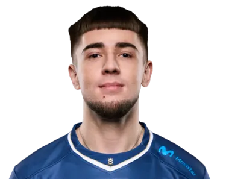
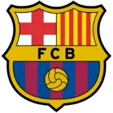

LES · Spain
In short
The top 15 of the 41 LES players that are indexed with an account, measured on euw1. For each one the best account is published, not all of them: a professional with several has a single rank that counts. The table runs from Challenger · 3825 LP to Challenger · 2369 LP.
| # | Player | Team | Role | Rank | SoloQ account |
|---|---|---|---|---|---|
| 1 | Mentos | FLK | Challenger · 3825 LP | ttv mentosslol#GRE | |
| 2 | Hydra | LUA | Mid | Challenger · 3661 LP | Po Gap#EUW |
| 3 | Macaquinho | BAR | Mid | Challenger · 3145 LP | BAR MOJITO#MACA |
| 4 | Andariel | UCAM | Bot | Challenger · 3040 LP | ANDA#RIEL |
| 5 | Kozi | UCAM | Top | Challenger · 3037 LP | Kozi#UCAM |
| 6 | Papiteero | HRTS | Top | Challenger · 2886 LP | anteno#PT1 |
| 7 | NightSlayer | MKF | Top | Challenger · 2718 LP | Kingslayer#world |
| 8 | Escik | UCAM | Mid | Challenger · 2698 LP | ESCIK#EU1 |
| 9 | Mercy9 | HRTS | Mid | Challenger · 2621 LP | Mercy9#4918 |
| 10 | 13 | MKF | Bot | Challenger · 2598 LP | Mumei Kaneshige#ランク1 |
| 11 | XnS | MKF | Jungle | Challenger · 2561 LP | SeXnS#SeXnS |
| 12 | Myrtus | MKF | Support | Challenger · 2549 LP | Myrtus#P38 |
| 13 | Lure | HRTS | Bot | Challenger · 2530 LP | SHJY#Lure |
| 14 | Koldo | BAR | Jungle | Challenger · 2469 LP | Koldo#1233 |
| 15 |  Fresskowy |
MKF | Mid | Challenger · 2369 LP | Erling Haaland#tukan |
The 8 most played champions in the recent match history of LES players. Yunara leads with 61 games and 64 % wins. The DPM is weighted by games, it is not an average of averages.
| Champion | Games | Wins | Average DPM | Players | Plays it most |
|---|---|---|---|---|---|
| Yunara | 61 | 64 % | 73 | 7 | Kaii |
| Jayce | 59 | 51 % | 78 | 10 | selenex |
| Rell | 54 | 61 % | 70 | 5 | TIMR |
| Ambessa | 53 | 62 % | 78 | 8 | Pasameelcelo |
| KSante | 49 | 55 % | 75 | 6 | Pasameelcelo |
| LeeSin | 46 | 57 % | 67 | 10 | Clicker |
| Anivia | 37 | 59 % | 67 | 5 | Midnight |
| Qiyana | 37 | 51 % | 72 | 5 | Lurox |

BAR Barça eSports5 playersThe next LES match, with kick-off times in UTC. The first one is MKF vs HRTS, on Sunday 6 September at 10:00 UTC.
Finals · Bo5
Official LES schedule on lolesports, read on 2026-09-03. The LES times here are UTC, not local time: this page is served identically everywhere. The bot watches those same players on euw1 and alerts when they queue up for SoloQ.
Mentos (FLK, ), at Challenger · 3825 LP. It is the highest of the 41 LES players that LoLProTrackr has indexed.
41 players across 8 teams, with about 141 SoloQ accounts between them: an average of 3.4 accounts per player. It comes from counting the LES leaderboard, not from an estimate.
Yes. LoLProTrackr posts to your Discord channel with the champion, the role, the rank and the team of the LES player as soon as the game starts, without you having to ask for anything.
Barça eSports (BAR), FLK (FLK), GIANTX iTero (GXI), Team Heretics Academy (HRTS), LUA (LUA), Movistar KOI Fénix (MKF), UB (UB), UCAM Esports (UCAM).
Movistar KOI Fénix vs Heretics Academy, on Sunday 6 September at 10:00 UTC. It is the only one left on the official lolesports schedule.
From each player's known accounts, checked one by one against Riot's API on euw1. For every player the highest-ranked account is published, not all of them: someone with four accounts has a single relevant rank, the one they compete on.
LoLProTrackr posts this alert to your Discord channel —or your DMs— the moment a player enters a game, across the 20 leagues in the catalogue. Free.
The free plan follows one league; up to 4 on the paid ones, which is the real ceiling set by Riot's request quota.